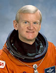

Lyndon B. Johnson Space Center
Houston, Texas 77058
|
National Aeronautics and Space Administration Lyndon B. Johnson Space Center Houston, Texas 77058 |
 |
Biographical Data |
||
John H. Casper (Colonel, U.S. Air Force, Ret.)
Special Assistant for Program Integration
Orion Program
Johnson Space Center
PERSONAL DATA: Born in Greenville, South Carolina, but considers Gainesville, Georgia, to be his hometown. Married to Beth Taylor Casper. Four children. He enjoys flying general aviation aircraft, running, and classical music.
EDUCATION: Graduated from Chamblee High School, Chamblee, Georgia; received a Bachelor of Science degree in Engineering Science from the U.S. Air Force Academy, Colorado Springs, Colorado and a Master of Science degree in Astronautics from Purdue University, West Lafayette, Indiana. He is a graduate of the Air Force Air War College, Montgomery, Alabama.
ORGANIZATIONS: Society of Experimental Test Pilots; Association of Space Explorers; American Institute of Aeronautics and Astronautics; Aircraft Owners and Pilots Association and the U.S. Air Force (USAF) Academy Association of Graduates.
SPECIAL HONORS: Awarded two Defense Meritorious Service Medals; Defense Superior Service Medal; two Legion of Merit Awards; two Distinguished Flying Crosses; 11 Air Medals; six Air Force Commendation Medals; Vietnamese Cross of Gallantry; two NASA Distinguished Service Medals; NASA Exceptional Service Award; NASA Medal for Outstanding Leadership; four NASA Spaceflight Medals; the National Intelligence Medal of Achievement and the Presidential Award as a Meritorious Executive in the Senior Executive Service.
MILITARY EXPERIENCE: Casper earned his pilot wings at Reese Air Force Base, Texas. After F-100 training at Luke Air Force Base, Arizona, he flew 229 combat missions with the 35th Tactical Fighter Wing at Phan Rang Air Base, Vietnam. Following his tour in Vietnam, Casper flew F-100 and F-4 aircraft, while assigned to the 48th Tactical Fighter Wing, Royal Air Force Lakenheath, United Kingdom. Casper graduated from the USAF Test Pilot School at Edwards Air Force Base, California, and became chief of the F-4 Test team. He flew initial performance and weapons separation tests for the F-4G Wild Weasel aircraft and avionics tests for F-4E and A-7 aircraft. Casper then became operations officer and, later, commander of the 6513th Test Squadron, where he conducted flight test programs to evaluate and develop tactical aircraft weapons systems. He was then assigned to USAF Headquarters at the Pentagon and was deputy chief of the Special Projects Office, where he developed USAF positions on requirements, operational concepts, policy and force structure for tactical and strategic programs. Casper has logged more than 10,000 flying hours in 52 different aircraft.
NASA EXPERIENCE: Selected as an astronaut by NASA in May 1984, Casper became an astronaut in June 1985. A veteran of four spaceflights, he has logged over 825 hours in space. He was the pilot on STS-36 (1990) and commander on missions STS-54 (1993), STS-62 (1994) and STS-77 (1996). His technical assignments while in the Astronaut Office included: chief of the Operations Development branch; lead for improvements to the nosewheel steering, brakes, tires and development of a landing drag chute; astronaut team leader for the Shuttle Avionics Integration Laboratory (SAIL) and ascent/entry Capsule Communicator (CAPCOM) in the Mission Control Center.
Following his last shuttle mission, Casper has served in positions of increasing responsibility at NASA. He was director of safety, reliability, and quality assurance at NASA’s Johnson Space Center, where he was responsible for all safety, reliability and quality activities for human spaceflight programs, including the International Space Station (ISS), the space shuttle, Space Launch Initiative and Crew Return Vehicles. He also was responsible for planning, directing and implementing an effective institutional safety program to prevent injuries, loss of life or loss of capital assets.
After the Columbia accident in February 2003, Casper served as the deputy of the NASA Mishap Investigation Team for the Columbia debris recovery operation, which involved directing the efforts of more than 6,000 ground, air and water search personnel as well as protection and impoundment of debris. He was co-chair of the Return-ToFlight planning team, a NASA Headquarters chartered independent team charged with addressing all actions necessary to comply with the Columbia Accident Investigation Board recommendations. He then joined the Space Shuttle Program and became manager of the Management Integration and Planning Office and, later, associate manager of the Space Shuttle Program. He is currently with the Orion Program as special assistant for Program Integration.
SPACEFLIGHT SUMMARY: STS-36 launched from NASA’s Kennedy Space Center, Florida, on February 28, 1990, aboard space shuttle Atlantis. This mission carried classified Department of Defense payloads and ??was unique in that it flew at 62 degrees inclination, the highest inclination flown to date by the U.S. Human Spaceflight Program. (I say delete that sentence). After 72 Earth orbits, the STS-36 mission concluded with a lakebed landing at Edwards Air Force Base- on March 4, 1990, after traveling 1.87 million miles. Mission duration was 106 hours and 19 minutes.
STS-54 (January 13, 1993 through January 19, 1993) launched from the Kennedy Space Center on January 13, 1993, aboard space shuttle Endeavour. A crew of five successfully accomplished the primary objectives of this six day mission, including deploying the $200 million NASA Tracking and Data Relay Satellite (TDRS-F), which joined four other satellites to complete a national communications network supporting space shuttle and other low-Earth orbit scientific satellites. A Diffuse X-Ray Spectrometer (DXS), carried in the payload bay, collected X-ray data to enable investigators to answer questions about the origin of X-rays in the Milky Way galaxy. A highly successful spacewalk resulted in many lessons learned that benefited the International Space Station assembly. The flight was also the first to shut down and restart a fuel cell in flight, successfully demonstrating another space station application. Casper landed Endeavour at the Kennedy Space Center on January 19, 1993, after 96 Earth orbits, covering over 2.5 million miles. Mission duration was 143 hours and 38 minutes.
STS-62 (March 4, 1994 through March 18, 1994) was a two week microgravity research mission aboard space shuttle Columbia. Its primary payloads were the U.S. Microgravity Payload (USMP-2) and the Office of Aeronautics and Space Technology (OAST-2) payloads. These payloads included experiments to understand the process of semiconductor crystal growth, investigating the process of metal alloys as they solidify, studying materials at their critical points (where they exist as both a liquid and gas) and testing new technology for use on future spacecraft, such as advanced solar arrays, radiators, heat sinks and radiation shielding. The flight also tested new technology for aligning the Remote Manipulator System arm and grasping payloads with a new magnetic-end effector. Columbia flew at a record low altitude of 195 km (105 nautical miles) to gather data on spacecraft glow and erosion caused by atomic oxygen and nitrogen molecules. Casper landed Columbia at the Kennedy Space Center after 224 Earth orbits and 5.82 million miles.
STS-77 (May 19, 1996 through May 29, 1996) was a ten day mission aboard space shuttle Endeavour. The crew performed several sequences (one with a SPARTAN satellite and three with a deployed Satellite Test Unit) and approximately 21 hours of formation flying in close proximity of the satellites. During the flight, the crew also conducted 12 materials processing, fluid physics and biotechnology experiments in a Spacehab Module. STS-77 deployed and retrieved a SPARTAN satellite, which carried the Inflatable Antenna Experiment that was designed to test the concept of large, inflatable space structures. A small Satellite Test Unit was also deployed to test the concept of self-stabilization by using aerodynamic forces and magnetic damping. Casper brought Endeavour back to Earth at the Kennedy Space Center after 160 Earth orbits and 4.1 million miles. Mission duration was 240 hours and 39 minutes.
JULY 2014